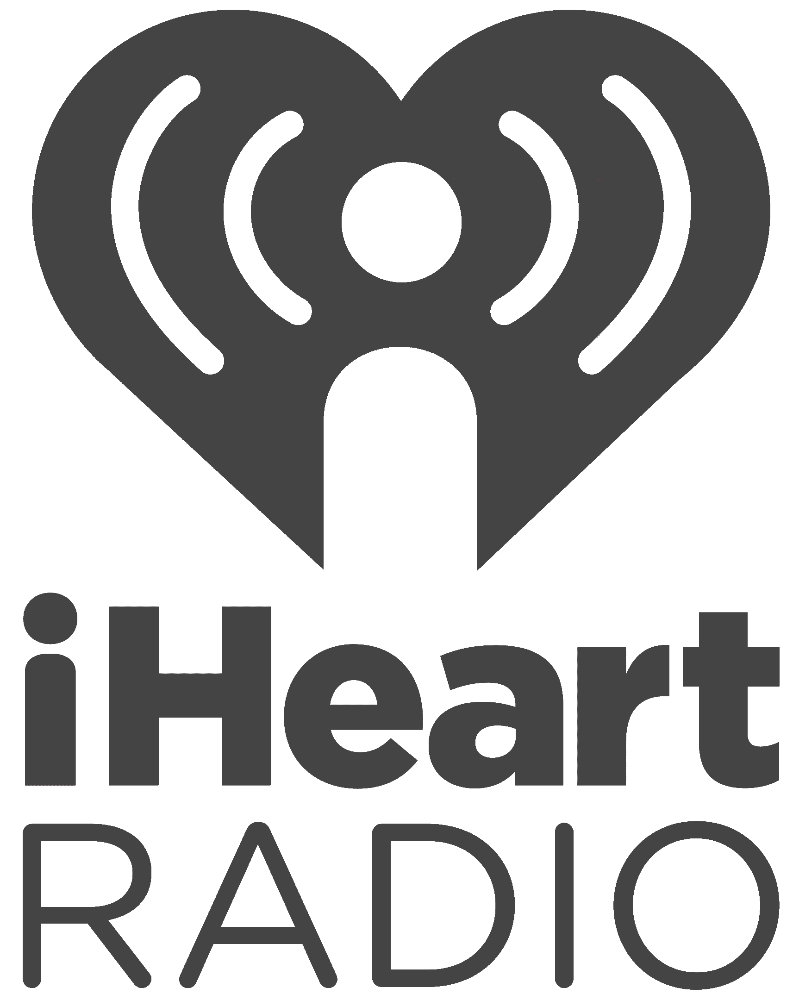
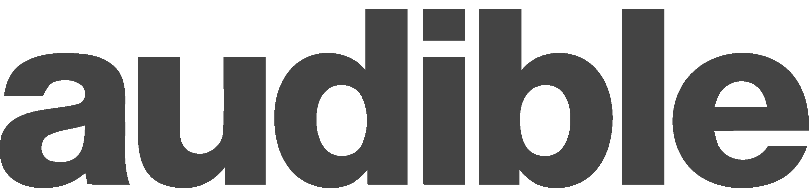

Adrian Dolinay
Home
About
Podcast
Book Recommendations
The Aspiring STEM Geek
Select Podcast Episode:
Cybersecurity with Ben Kofman - #5
Software, AI and ML with Taziamoma Abraham - #4
Tech News with Adrian Dolinay - #3
Robotics with Damian Kozak - #2
Talking Tech with Matthew Handzy - #1
Podcast Available On

